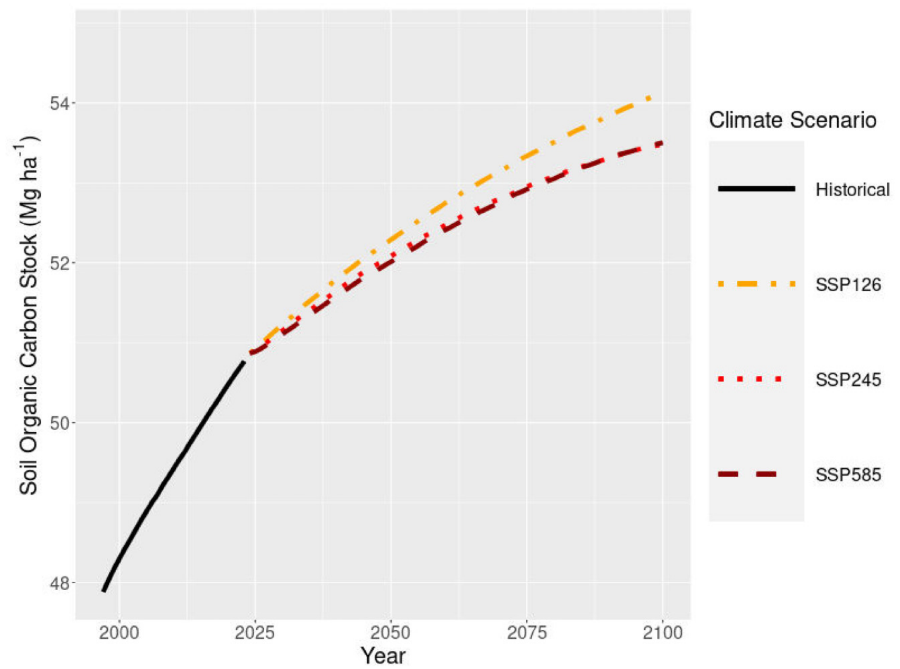

How Much Carbon Can No-Till Still Sequester? A Saskatchewan Forecast to 2100
No-till farming is one of the great soil-carbon success stories of the Canadian Prairies. By reducing soil disturbance, it has steadily rebuilt organic carbon across Saskatchewan since adoption took off in the 1990s. That success is exactly why the next question is the hard one, and the one that matters most for carbon markets: how much carbon can no-till still sequester from here, and for how long?
I built a model to answer that province-wide, out to 2100.
Pairing soil maps with a carbon process model
Estimating future carbon change means simulating the system, not just extrapolating a trend. So this work links two things: predictive soil maps that supply the starting soil carbon, texture, and bulk density for every quarter section, and the CENTURY biogeochemical process model, which simulates how carbon actually cycles through the soil year by year under a given climate and set of crop residue inputs.
A couple of details make the estimate credible. I esetimated when no-till was adopted on each parcel using satellite imagery based on the disappearance of bare soil in satellite imagery so the model starts adding no-till carbon at the right time and place. I then validated it against the Prairie Soil Carbon Balance network, a set of long-term monitored benchmark sites; using those measured starting values, the modelled and observed carbon stocks agreed closely (R-squared of 0.80). I then ran it forward under three climate pathways - low, moderate, and high emissions - to 2100.
What no-till has done, and what’s left
This figure is the whole story in one line. The steep black curve is the historical change in soil organic carbon; the coloured curves are the three future climate scenarios.

Historically, no-till added about 2.8 Mg of carbon per hectare in the top 20 cm, the steep part of the climb. The forward projection carries two messages at once. Carbon keeps accumulating in every scenario, so no-till stays a net benefit. But the curve visibly flattens: the annual rate of gain falls from about 0.06 Mg/ha/yr today to under 0.02 Mg/ha/yr by late century. The soils are approaching a new equilibrium, and warming accelerates the decomposition that works against accumulation.
Scenario matters, but not the way you might expect. Under low emissions, cropland gains about 3.1 Mg/ha by 2100; under both moderate and high emissions, only about 2.3 Mg/ha and the two upper pathways nearly converge. The big step down happens moving from low to moderate warming, not from moderate to high.
In whole-province terms, no-till sequestered on the order of 6 million tonnes of CO2-equivalent per year in Saskatchewan as of the mid-2010s. That annual rate is projected to fall by roughly half or more by 2100 - to somewhere between about 1.2 and 1.8 Mt CO2e per year, depending on how much the climate warms.
The part that matters for carbon programs
Two findings should shape how anyone approaches soil-carbon crediting here.
First, the marginal tonne is getting harder to add. Cumulative stocks are still rising, but the rate is in decline. For crediting, that’s the crux of the additionality and baseline question: a project counting on future no-till gains is working against a shrinking per-year margin, and the forecast needs to reflect that rather than assume past rates continue.
Second, the remaining potential is not spread evenly. Much of the Black soil zone in the north has already realized most of its no-till gains, so its future potential is lower. The largest remaining upside sits in the drier Dark Brown and Brown soil zones of south-central and western Saskatchewan, which started lower and have more room to add carbon. For siting projects or targeting incentives, geography is decisive and a provincial average would mislead you in both directions.
Extending the gains further will likely take more than no-till alone: better residue management, and crop varieties bred for larger, more stable belowground inputs.
Why this kind of modelling matters
Turning a soil-carbon question into a defensible number means combining spatial soil data, a process model that respects the biogeochemistry, honest treatment of climate scenarios, and validation against real monitored sites.
This article summarizes: Sorenson, P. T., Bedard-Haughn, A. K., & St. Luce, M. (2024). Combining predictive soil mapping and process models to estimate future carbon sequestration potential under no-till. Canadian Journal of Soil Science. https://doi.org/10.1139/cjss-2024-0046